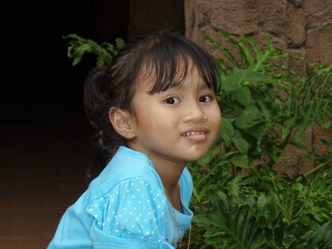
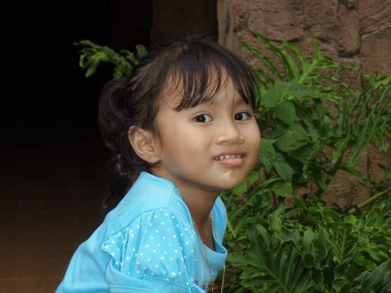
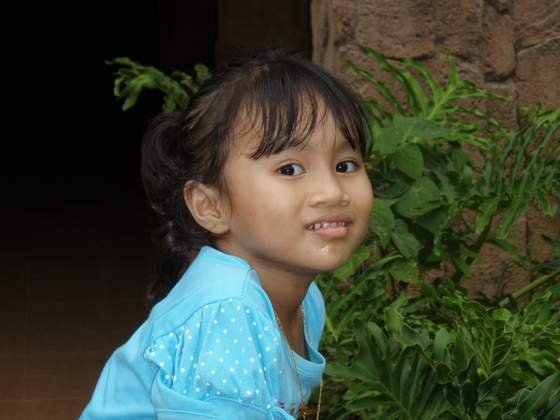

About Me
"Naturally introverted, selectively extroverted"
| Name | Mirza Binti Marzuki |
|---|---|
| Age | 20 Years Old |
| Date of Birth | 5 October 2003 |
| Zodiac | Libra |
| Hobbies | Playing games, reading and listening to musics |
| Course | Diploma in Information Management (IM110) |
| Nationality | Malaysia |
| Hometown | Langkawi, Kedah |
Hi! I'm Mirza Binti Marzuki and I was born on the 5 October 2003 as the first born daughter to a lovely couple at Hospital Daerah Langkawi which is now known as the Hospital Sultanah Maliha. Even though I was born at Langkawi, Kedah and it is my hometown, I only stay there during kindergarten age and also during my final year in secondary school. I'm proud to say that i'm finally hitting 20 years old this year. Not to mention that I only have at least 2 months before I graduated as a student in Information Management.
Me as a baby with my mother
Me as a child

Me as a kid
The Origin Behind My Name
Me as a child

Me as a kid
The Origin Behind My Name
